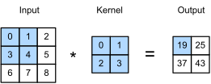
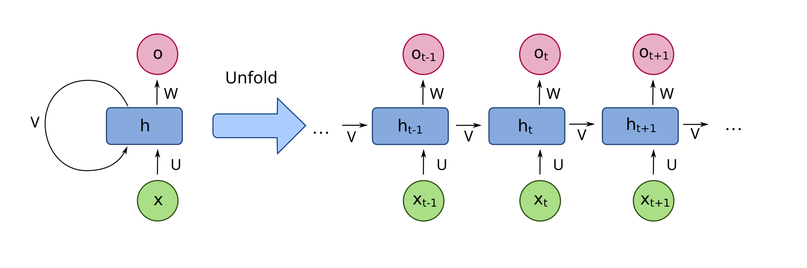
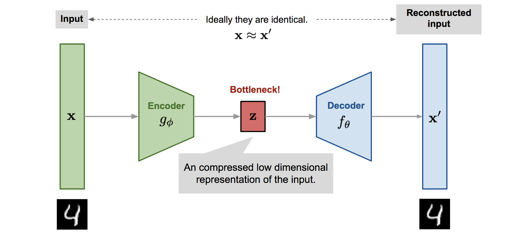
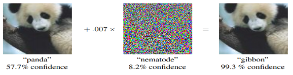

Xavier/Glorot — для sigmoid/tanh; He — для ReLU: \(\sigma^2 = 2/n\).
Правильный старт решает, сойдётся ли обучение вообще.
Во фреймворках инициализация по умолчанию уже разумная — но знать причину полезно.
Фреймворки: PyTorch и TensorFlow/Keras
PyTorch
Pythonic-API, динамический граф.
Стандарт в исследованиях и всё чаще в проде.
TensorFlow / Keras
Зрелый продакшн: TF Serving, мобильный вывод.
Keras — высокоуровневый API для быстрых экспериментов.
Оба дают автоград: автоматическое дифференцирование.
Автоград: производные без формул
Фреймворк записывает операции прямого прохода в граф.
Вызов backward() применяет chain rule ко всем узлам.
Разработчик модели не выводит производные вручную.
Именно автоград сделал глубокое обучение инженерной дисциплиной, а не искусством дифференцирования.
Типовой пайплайн обучения
Данные и преобразования (нормализация!, занятие 2).
Модель: архитектура и размеры слоёв.
Функция потерь и оптимизатор.
Цикл: forward → loss → backward → step.
Валидация, метрики, early stopping.
Минимальный цикл обучения на PyTorch
import torch, torch.nn as nn
model = nn.Sequential(
nn.Linear(64, 128), nn.ReLU(),
nn.Linear(128, 64), nn.ReLU(),
nn.Linear(64, 10),
)
loss_fn = nn.CrossEntropyLoss()
opt = torch.optim.Adam(model.parameters(), lr=1e-3)
for epoch in range(10):
for Xb, yb in train_loader:
opt.zero_grad()
loss = loss_fn(model(Xb), yb)
loss.backward()
opt.step()
Валидация и метрики нейросетей
Те же метрики, что в занятии 2: accuracy, precision/recall, ROC-AUC, F1.
Дисбаланс классов: те же ловушки (accuracy бесполезна).
Масштабирование признаков обязательно: сети чувствительны к масштабу.
Сравниваем с базовыми моделями занятия 2 (kNN, RF) — дешёвый бенчмарк.
Свёрточные сети (CNN): идея
Что такое свёртка
Маленький фильтр скользит по изображению.
Каждый фильтр детектирует свой паттерн (край, текстура).
Слои строят иерархию: края → формы → объекты.

Фильтр скользит по изображению и строит карту признаков
Свёртка формально
$$S(i,j) = \sum_m \sum_k I(i+m,\; j+k)\, K(m,k)$$
K — ядро свёртки: небольшая матрица обучаемых весов.
Веса общие для всей картинки (weight sharing) → параметров мало.
Несколько фильтров → несколько карт признаков в одном слое.
Stride, padding, pooling (обзорно)
Stride
Шаг скольжения фильтра; stride > 1 уменьшает размер карты.
Padding
Добавление рамки нулей: сохраняем размер и информацию о краях.
Pooling
Уменьшение разрешения (max-pool): инвариантность к малым сдвигам.
Почему CNN лучше MLP на изображениях
Локальность: паттерн виден в малой области, не во всей картинке.
Инвариантность к сдвигу: объект узнаётся в любом месте.
На порядок меньше параметров при том же качестве.
MLP на картинке 224×224×3 имел бы первый слой в миллионы весов без всякой структуры.
CNN в задачах безопасности (обзорно)
Классификация вредоносных файлов (бинарники как изображения).
Детекция аномального трафика по спектрограммам/представлениям пакетов.
Распознавание лиц и объектов в видеоаналитике.
Осторожно: качество упирается в размеченные данные и дрейф (занятие 3).
Рекуррентные сети (RNN) для последовательностей
Идея
Сеть хранит скрытое состояние во времени.
Обрабатывает логи, текст, трафик, метрики.
Проблема: затухающий градиент на длинных последовательностях.

RNN: состояние передаётся от шага к шагу
LSTM/GRU и трансформеры (обзорно)
LSTM / GRU
Вентили против затухающего градиента: память на длинные зависимости.
Transformer
Механизм внимания (attention); параллельное обучение; стандарт NLP и всё чаще временных рядов.
Детали трансформеров — тема отдельных занятий; здесь достаточно знать место в иерархии архитектур.
Эмбеддинги: векторные представления
Объект (слово, запрос, событие) отображается в плотный вектор.
Близкие по смыслу объекты близки в пространстве.
Эмбеддинги можно подавать классическим моделям занятия 2 (kNN, RF).
Мост между глубоким обучением и классическим ML-пайплайном.
Автоэнкодер: мостик из занятия 3

Encoder сжимает вход в код, decoder восстанавливает вход
Формулы
$$\hat{x} = D(E(x))$$
$$L = \| x - \hat{x} \|^2$$
Узкое место (bottleneck) учит сжатое представление — как PCA, но нелинейное.
Автоэнкодер для поиска аномалий
Учим на нормальных данных: они восстанавливаются хорошо.
Аномалия даёт большую ошибку реконструкции \(\|x-\hat{x}\|^2\).
Порог ошибки — по квантили на валидации (приём из занятия 3).
Связка: аномалии (занятие 3) + глубокое обучение (занятие 4) = рабочий детектор для сложных данных.
Adversarial-примеры (обзорно)
Атака FGSM
$$x' = x + \varepsilon \cdot \mathrm{sign}\big(\nabla_x L(x, y)\big)$$
Незаметное возмущение вдоль градиента меняет предсказание.

Классический пример: panda + шум → gibbon с уверенностью 99%
Устойчивость моделей: что делают на практике
Adversarial-training: обучение на примерах с возмущениями.
Контроль входных данных и мониторинг уверенности предсказаний.
Ансамбли и детекторы выбросов на входе (мостик к занятию 3).
Полной защиты нет: robustness — свойство, которое проектируют.
Пределы глубокого обучения
Требует много размеченных данных и вычислений.
Плохо интерпретируемо: «чёрный ящик».
Чувствительно к дрейфу распределения (MLSecOps, занятие 3).
Часто проигрывает градиентному бустингу на табличных данных.
Интерпретируемость (обзорно)
Saliency-карты: какие пиксели повлияли на решение.
Attention-веса: на что смотрел трансформер.
SHAP/LIME: локальные объяснения предсказаний (идеи из занятия 2).
В безопасности объяснимость — требование регуляторов и расследований.
Transfer learning и предобученные модели
Берём сеть, предобученную на большом датасете (ImageNet, текстовые корпуса).
Дообучаем (fine-tune) на своих данных — экономим данные и время.
Стандартная практика: своя модель с нуля нужна редко.
Связь с MLSecOps
DL-детекторы вредоносного ПО и аномального трафика.
Автоэнкодеры для мониторинга метрик и логов (занятие 3).
Adversarial-риски: атаки на сами ML-модели в проде.
Жизненный цикл: дрейф, переобучение, деградация качества со временем.
Практика: план работы
Часть 1. MLP
sklearn MLPClassifier на digits; сравнение с kNN/RF из занятия 2.
Часть 2. PyTorch
Свой цикл обучения: Adam, dropout, early stopping; кривые потерь.
Часть 3. Автоэнкодер
Поиск аномалий по ошибке реконструкции; порог по квантили.